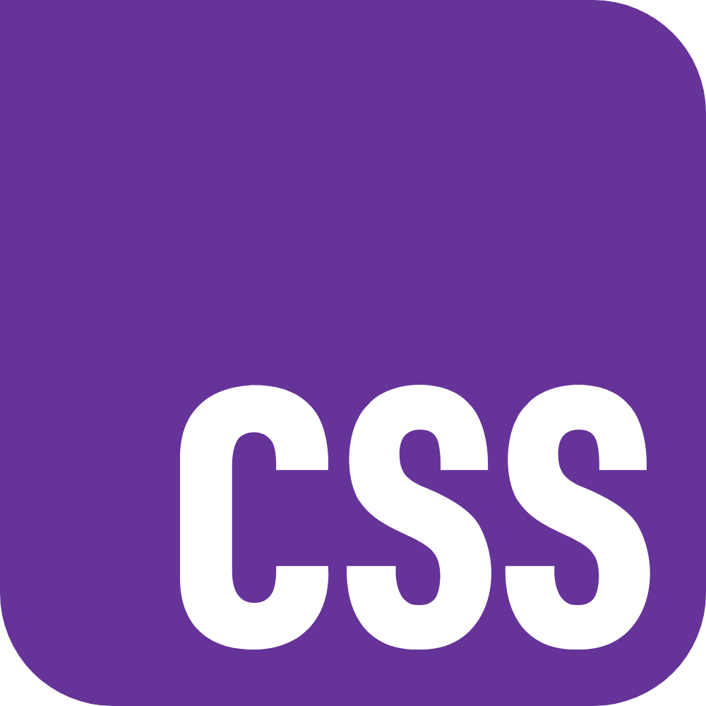
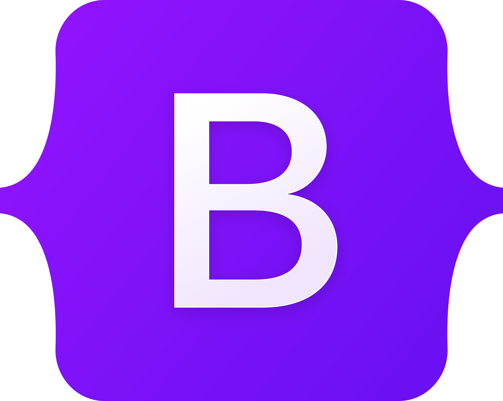

HTML :-

HTML (HyperText Markup Language) is the standard language for creating web pages. It structures content using elements like headings, paragraphs, links, and images. HTML forms the backbone of all websites and works with CSS and JavaScript to build interactive, styled, and well-structured web experiences for users.
CSS :-
CSS (Cascading Style Sheets) is used to style and design HTML content. It controls layout, colors, fonts, spacing, and more. CSS allows web developers to create visually appealing websites and ensures consistency across multiple pages. It can be applied inline, internally, or via external stylesheets.
JavaScript :-

JavaScript is a powerful scripting language used to add interactivity to web pages. It can control dynamic content, validate forms, create animations, and communicate with servers. JavaScript runs in the browser and is essential for modern web development, working alongside HTML and CSS to build responsive websites.
Bootstrap :-
Bootstrap is a popular front-end framework for developing responsive and mobile-first websites. It includes pre-designed components, CSS, and JavaScript-based templates. Bootstrap simplifies web development with its grid system, buttons, forms, modals, and navigation bars, helping developers build consistent and professional-looking interfaces quickly and efficiently.
React :-

React is a JavaScript library developed by Facebook for building user interfaces. It enables the creation of reusable UI components and offers a virtual DOM for efficient rendering. React is widely used in single-page applications (SPAs) due to its flexibility, speed, and ability to manage dynamic data updates.
Java :-

Java is a high-level, object-oriented programming language known for its portability across platforms. It is widely used for building enterprise applications, mobile apps (especially Android), and web services. Java’s strong memory management, security features, and extensive libraries make it a reliable choice for robust software development.
Python :-

Python is a versatile, high-level programming language known for its readability and simplicity. It supports multiple programming paradigms and is used in web development, data science, AI, automation, and more. Python's extensive libraries and community support make it ideal for beginners and professionals working on a wide range of projects.
Git :-

Git is a distributed version control system used to track changes in source code during software development. It enables multiple developers to collaborate efficiently, manage project history, and revert to previous versions. Git operates locally and provides powerful tools like branching, merging, and conflict resolution to streamline coding workflows.
Github :-

GitHub is a cloud-based platform that hosts Git repositories. It allows developers to store, manage, and share code with others. GitHub supports collaboration through features like pull requests, issues, and project boards. It also provides tools for continuous integration, code review, and open-source contributions, making teamwork more organized and efficient.